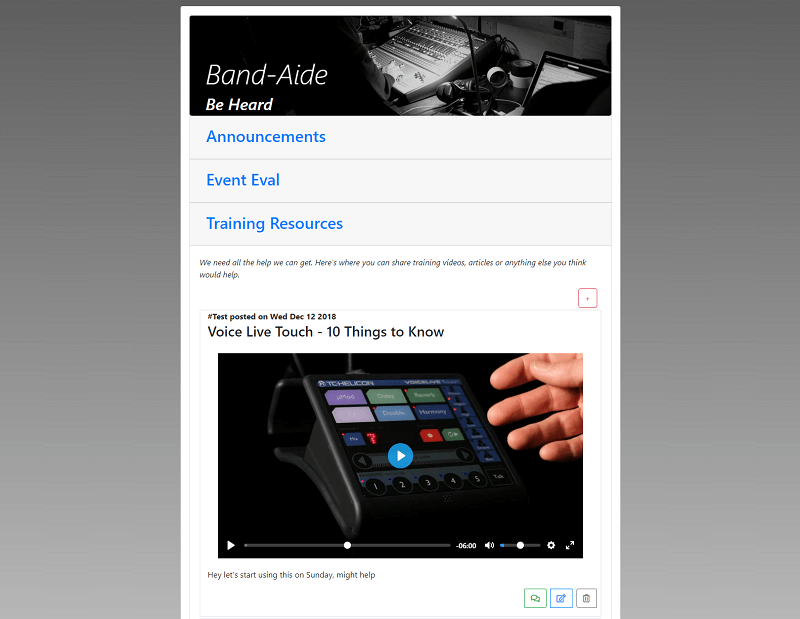

About Me
Before I started coding, where I most realized passion for UI/UX was in the kitchen cooking up and perfecting recipes. As a Web Developer now, I find I have the same passion for whipping up a new dish as I do for making applications.
Some other things that I really enjoy are making funny faces at my baby daughter, backpacking in the mountains and of course, breaking a whole lot of bread with friends. Feel free to take a look at some of my projects and I'd love to talk if you want to reach out.
Projects
Hungry Hunter
Hungry Hunter is a local search app for when you need good food nearby and now.

BandAide
A platform for church tech team communication. Every tech person knows we all need to get better and improvement requires what every A/V person dreads... feedback. In this case feedback is good, so go ahead share video resources, discuss how we can improve and let's get on the same page.
